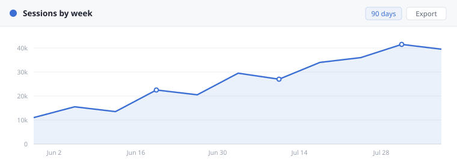

Beacon 4.2 — release notes
Highlights
The report builder no longer waits for a seperate warm-up pass. The first chart on a cold workspace paints in about a third of the time it used to, and the loading state is gone for anything under half a second.
Scheduled exports run on their own worker. That was neccessary before we could raise the row limit, and it also keeps a slow export from holding up the live query path while people are reading a report.
Saved views follow the person, not the browser. Sign in from a second machine and you recieve the same layout, the same filters and the same date range.
The report builder
Columns, filters and grouping now live in one panel instead of three. The panel remembers the last five fields you used, so building a second version of a report takes a handful of clicks.

Configuration
Export destinations moved into beacon.yml. The old environment
variables still work in 4.2 and print a warning on start.
export:
destination: s3://reports-eu-west-1/beacon
format: csv
cache:
# Warm the cache on boot so the first query does not pay for a cold index.
# If a timeout occurance shows up in the log, raise the retreive budget.
warm_on_boot: true
retreive_budget_ms: 250Settings on the way out
These still work in 4.2 and print a warning. They come out on the versions below.
| Setting | Use instead | Removed in |
|---|---|---|
| export.retryLimit | export.retries | v4.6 |
| BEACON_CACHE_TTL | cache.ttlSeconds | v4.6 |
| src/config/legacy.yml | src/config/export.yml | v4.8 |
| /api/v1/reports | /api/v2/reports | v5.0 |
| Weekly digest email | Scheduled export | v5.0 |
Fixes
- A crash occured when two people renamed the same folder in the same second.
- The date picker is definately faster on long ranges. It no longer rebuilds the grid on every click.
- Weekly digests went out at the begining of the week for workspaces outside Europe.
- Column widths survive a reload again.
- A share link stopped working for people who had never opened the report. It works now.
Localized notes
The German summary below is written by our team in Berlin. Only the English page is updated on release day.
Also available in Deutsch · Español · Português do Brasil · Français · 日本語
Upgrade notes
Nothing to install. The switch happens during your next maintainance window and takes under a minute. Reports stay readable while it runs.
Column names are compared in a consistant way from 4.2 on, so a view that was saved last year may sort in a new order the first time you open it. Save the view once and the order sticks.
Running Beacon behind a proxy? Add the new export host to your allowlist before you upgrade, or scheduled exports will queue.